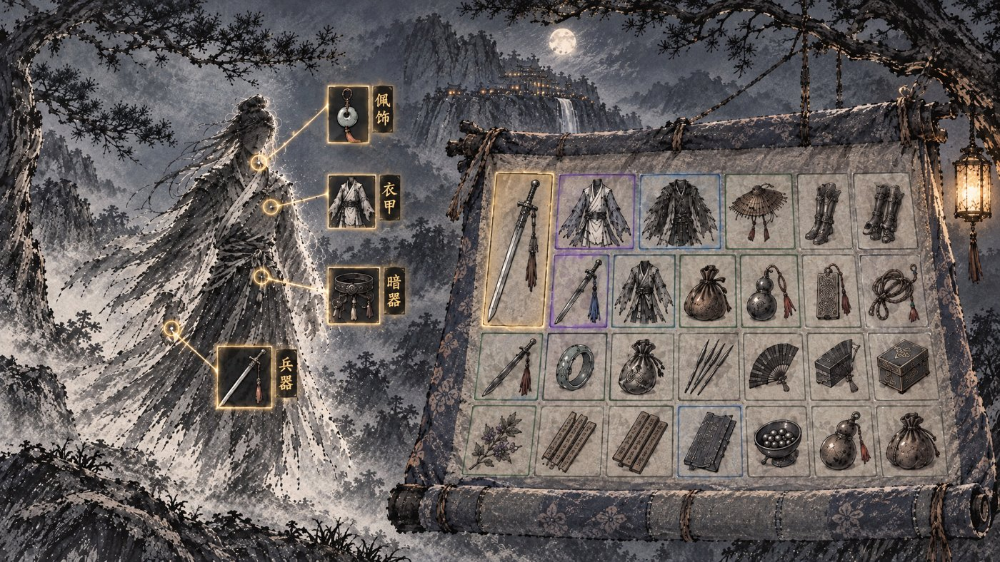
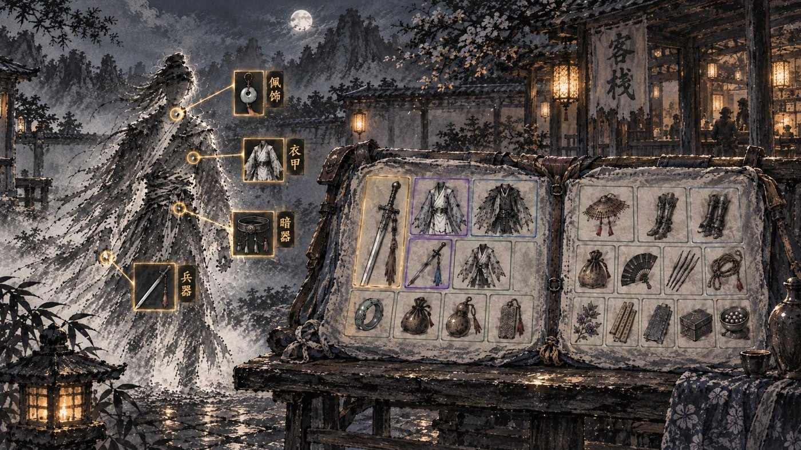
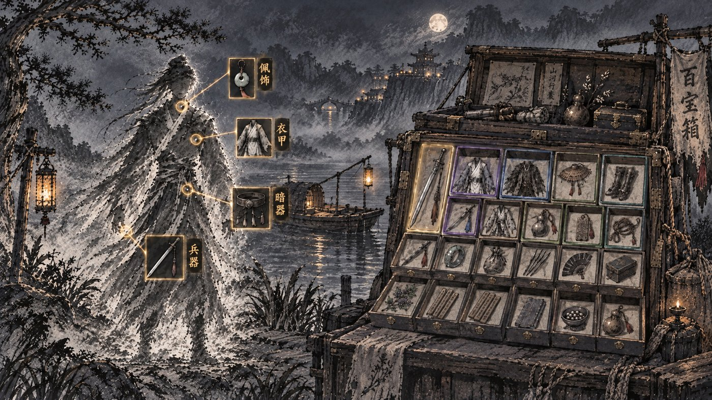
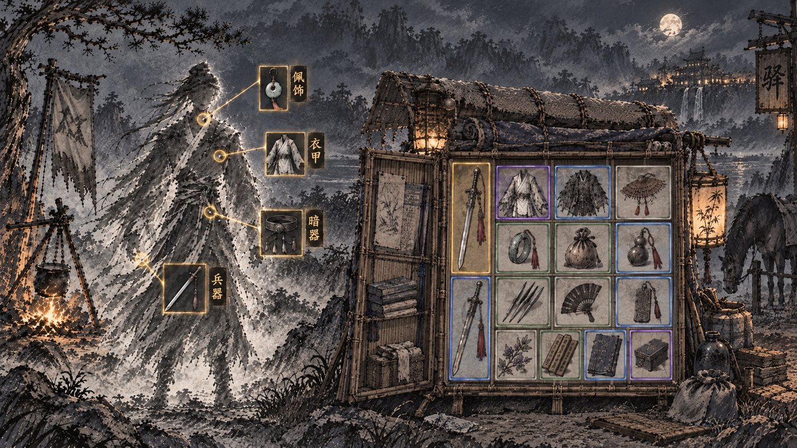
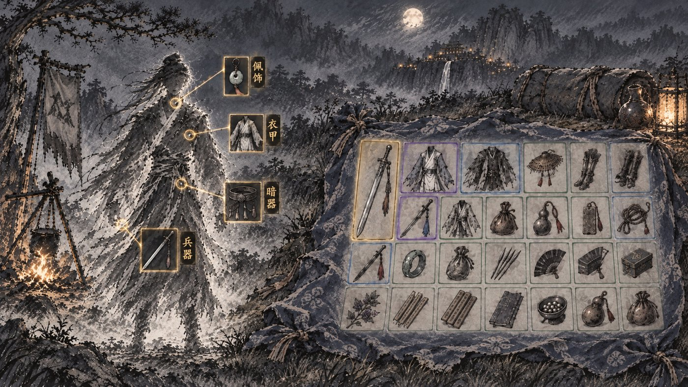

行囊 · 雾中人影不变，包裹换形态

壬 · 挂起的卷包一卷印花布挂在松枝上，从上往下展开，底边还卷着一截。
仍是布，但比摊在地上的包袱更立体；卷着的那截可以随背包格数变长变短。

辛 · 褡裢一条两头装东西的长布袋，摊开在客栈长凳上，左右两个兜。
两个兜天然分成两区，比如左边兵器衣甲、右边零碎；但格子被中缝劈开，形态格（长兵器、二乘二衣甲）跨不过去。

癸 · 货郎百宝箱一口带抽屉的旧木箱，抽屉一层层拉开，每个抽屉就是一格。
器物感最强、格子最规整；但木箱硬，离「包裹」最远，和之前否掉的箱笼接近。

子 · 书笈竹篓书生背的竹编书笈，带小顶棚，前门打开，里面竹格放东西。
竹编有江湖行旅味，但格子少、像柜子，放八十格会挤。

己 · 蓝印花布包袱（上一轮）留作对照。